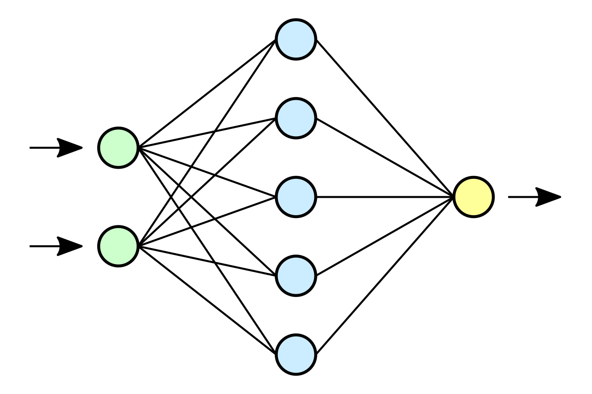

Réseau de neurones artificiels
Un réseau de neurones artificiels ou réseau neuronal artificiel, est un système dont la conception est à l'origine schématiquement inspirée du fonctionnement des neurones biologiques, et qui par la suite s'est rapproché des méthodes statistiques. Les réseaux de neurones sont généralement optimisés par des méthodes d'apprentissage de type probabiliste, en particulier bayésien. Ils sont placés d'une part dans la famille des applications statistiques, qu'ils enrichissent avec un ensemble de paradigmes permettant de créer des classifications rapides (réseaux de Kohonen en particulier), et d'autre part dans la famille des méthodes de l'intelligence artificielle auxquelles ils fournissent un mécanisme perceptif indépendant des idées propres de l'implémenteur, et des informations d'entrée au raisonnement logique formel (voir Apprentissage profond). En modélisation des circuits biologiques, ils permettent de tester quelques hypothèses fonctionnelles issues de la neurophysiologie, ou encore les conséquences de ces hypothèses pour les comparer au réel.